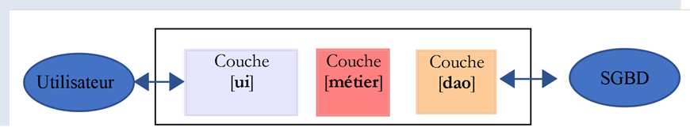
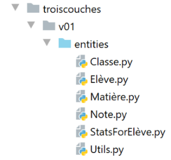
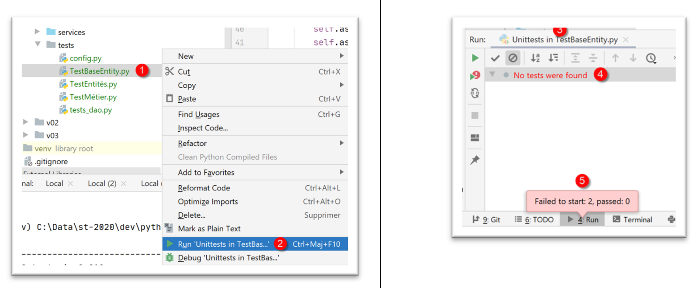
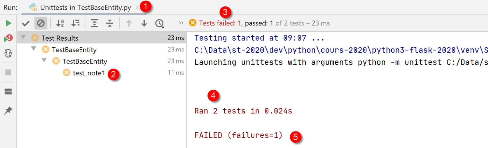
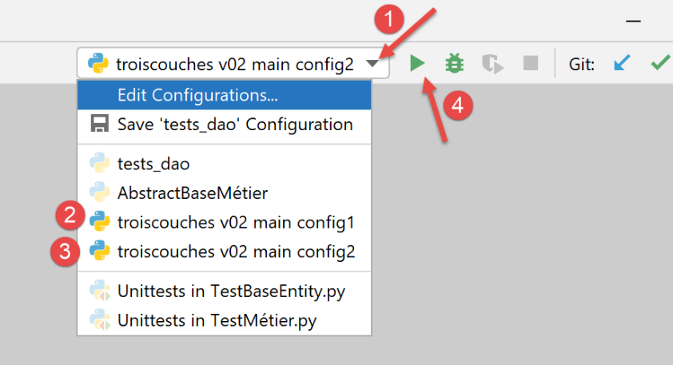

14. Layered architecture and interface-based programming
14.1. Introduction
We propose to write an application that displays the grades of middle school students. This application can have a multi-layer architecture:

- the [ui] (User Interface) layer is the layer that interacts with the application’s user;
- the [business] layer implements the application’s business rules, such as calculating a salary or an invoice. This layer uses data from the user via the [presentation] layer and from the DBMS via the [DAO] layer;
- the [DAO] (Data Access Objects) layer manages access to data in the DBMS (Database Management System).
This is the architecture that was used in the |Python 2 course|. A variant can also be introduced:

The differences from the previous layered structure are as follows:
- a main script called [main] above organizes the instantiation of the layers;
- the [ui, business, dao] layers no longer necessarily communicate with each other. If they need to, the [main] script provides them with the references to the layers they require;
The code here is organized into functional areas with a central coordinator:
- the orchestrator is the main script [main];
- the [ui], [dao], and [business] layers are the centers of expertise;
We could call this structure an orchestral organization.
14.2. Example 1
We will illustrate the layered architecture using a simple console application:
- there will be no database;
- the [DAO] layer will manage the Student, Class, Subject, and Grade entities to handle student grades;
- the [business] layer will calculate metrics based on a specific student’s grades;
- the [ui] layer will be a console application that displays student results;
The PyCharm project for the application is as follows:
 |
Note: The folders in blue are part of the [Root Sources] of the PyCharm project.
14.2.1. The application's entities
We will refer to classes whose sole role is to encapsulate data as entities. Dictionaries could be used for this purpose. The advantage of a class is that it allows us to test the validity of the data stored in the object and to provide a method that returns the object’s identity as a string.
 |
14.2.1.1. The [Class] entity
The [Class] entity (Class.py) represents a middle school class:
# imports
from BaseEntity import BaseEntity
from MyException import MyException
from Utils import Utils
class Class(BaseEntity):
# attributes excluded from the class state
excluded_keys = []
# class properties
@staticmethod
def get_allowed_keys() -> list:
# id: class identifier
# name: class name
return BaseEntity.get_allowed_keys() + ["name"]
# getter
@property
def name(self: object) -> str:
return self.__name
# setters
@name.setter
def name(self: object, name: str):
# name must be a non-empty string
if Utils.is_string_ok(name):
self.__name = name
else:
raise MyException(11, f"The class name {self.id} must be a non-empty string")
Notes
- line 7: the [Class] entity derives from the [BaseEntity] entity discussed in the section |The BaseEntity class|;
- lines 11–16: a class is defined by an ID and a name (line 16). The [id] property is provided by the [BaseEntity] class and the name by the [Class] class;
- lines 18–30: getter/setter for the [name] attribute; #### 14.2.1.2. The [Subject] entity
The [Subject] class (subject.py) is as follows:
# imports
from BaseEntity import BaseEntity
from MyException import MyException
from Utils import Utils
class Subject(BaseEntity):
# attributes excluded from the class state
excluded_keys = []
# class properties
@staticmethod
def get_allowed_keys() -> list:
# id: subject ID
# name: subject name
# weight: weight of the subject
return BaseEntity.get_allowed_keys() + ["name", "weight"]
# getter
@property
def name(self: object) -> str:
return self.__name
@property
def coefficient(self: object) -> float:
return self.__coefficient
# setters
@name.setter
def name(self: object, name: str):
# name must be a non-empty string
if Utils.is_string_ok(name):
self.__name = name
else:
raise MyException(21, f"The subject name {self.id} must be a non-empty string")
@coefficient.setter
def coefficient(self, coefficient: float):
# The coefficient must be a real number >= 0
error = False
if isinstance(coefficient, (int, float)):
if coefficient >= 0:
self.__coefficient = coefficient
else:
error = True
else:
error = True
# error?
if error:
raise MyException(22, f"The coefficient for the subject {self.name} must be a real number >= 0")
Notes
- line 7: the [Class] class derives from the [BaseEntity] class;
- lines 11–17: a subject is defined by its ID [id], its name [name], and its weight [coefficient];
- lines 19–50: getters/setters for the class attributes; #### 14.2.1.3. The [Student] entity
The [Student] class (student.py) is as follows:
# imports
from BaseEntity import BaseEntity
from Class import Class
from MyException import MyException
from Utils import Utils
class Student(BaseEntity):
# attributes excluded from the class state
excluded_keys = []
# class properties
@staticmethod
def get_allowed_keys() -> list:
# id: student ID
# last_name: student's last name
# first_name: student's first name
# class: student's class
return BaseEntity.get_allowed_keys() + ["last_name", "first_name", "class"]
# getters
@property
def lastName(self: object) -> str:
return self.__last_name
@property
def last_name(self: object) -> str:
return self.__first_name
@property
def class(self: object) -> Class:
return self.__class
# setters
@name.setter
def name(self: object, name: str) -> str:
# name must be a non-empty string
if Utils.is_string_ok(name):
self.__name = name
else:
raise MyException(41, f"The name of student {self.id} must be a non-empty string")
@first_name.setter
def first_name(self: object, first_name: str) -> str:
# first_name must be a non-empty string
if Utils.is_string_ok(first_name):
self.__first_name = first_name
else:
raise MyException(42, f"The first name of student {self.id} must be a non-empty string")
@class.setter
def class(self: object, value):
try:
# Expects a Class type
if isinstance(value, Class):
self.__class = value
# or a dict type
elif isinstance(value, dict):
self.__class = Class().fromdict(value)
# or a JSON type
elif isinstance(value, str):
self.__class = Class().fromjson(value)
except BaseException as error:
raise MyException(43, f"The [{value}] attribute of student {self.id} must be of type Class, dict, or json. Error: {error}")
Notes
- line 9: the [Student] class derives from the [BaseEntity] class;
- lines 13–20: A student is characterized by their ID [id], last name [lastName], first name [firstName], and class [class]. The latter parameter is a reference to a [Class] object;
- lines 22–65: getters/setters for the class attributes; #### 14.2.1.4. The [Note] entity
The [Note] class (note.py) is as follows:
# imports
from BaseEntity import BaseEntity
from Student import Student
from Subject import Subject
from MyException import MyException
class Grade(BaseEntity):
# attributes excluded from the class state
excluded_keys = []
# class properties
@staticmethod
def get_allowed_keys() -> list:
# id: note identifier
# value: the grade itself
# student: student (of type Student) associated with the grade
# subject: subject (of type Subject) associated with the grade
# The Note object is therefore a student's grade in a subject
return BaseEntity.get_allowed_keys() + ["value", "student", "subject"]
# getters
@property
def value(self: object) -> float:
return self.__value
@property
def student(self: object) -> Student:
return self.__student
@property
def subject(self: object) -> Subject:
return self.__subject
# getters
@value.setter
def value(self: object, value: float):
# the score must be a real number between 0 and 20
if isinstance(value, (int, float)) and 0 <= value <= 20:
self.__value = value
else:
raise MyException(31,
f"The {value} attribute of grade {self.id} must be a number in the range [0,20]")
@student.setter
def student(self: object, value):
try:
# we expect a Student type
if isinstance(value, Student):
self.__student = value
# or a dict type
elif isinstance(value, dict):
self.__student = Student().fromdict(value)
# or a JSON type
elif isinstance(value, str):
self.__student = Student().fromjson(value)
except BaseException as error:
raise MyException(32,
f"The [{value}] attribute of grade {self.id} must be of type Student, dict, or json. Error: {error}")
@subject.setter
def subject(self: object, value):
try:
# we expect a Subject type
if isinstance(value, Subject):
self.__matter = value
# or a dict type
elif isinstance(value, dict):
self.__subject = Subject().fromdict(value)
# or a JSON type
elif isinstance(value, str):
self.__subject = Subject().fromjson(value)
except BaseException as error:
raise MyException(33,
f"The [{value}] attribute of note {self.id} must be of type Subject, dict, or json. Error: {error}")
Notes
- line 8: the [Note] class derives from the [BaseEntity] class;
- lines 12–20: A [Note] object is characterized by its ID [id], the grade value [value], a reference [student] to the student who received this grade, and a reference to the subject [subject] associated with the grade;
- lines 22–75: getters/setters for the class attributes; ### 14.2.2. Application Configuration
 |
The [config.py] file configures the environment for the main script [main] (1) as well as for the tests (2). All these scripts have an [import config] statement at the beginning of the code. Note that the directory containing the script targeted by the [python script] command is automatically part of the Python Path. Therefore, if [config] is in the same directory as the scripts containing the [import config] statement, it will be found. Files [1] and [2] are identical here. This may not always be the case.
The [config.sys] file is as follows:
def configure():
import os
# absolute path to this script's folder
script_dir = os.path.dirname(os.path.abspath(__file__))
# root_dir
root_dir="C:/Data/st-2020/dev/python/cours-2020/python3-flask-2020/classes"
# absolute dependencies
absolute_dependencies = [
# local directories containing classes and interfaces
f"{root_dir}/02/entities",
f"{script_dir}/../entities",
f"{script_dir}/../interfaces",
f"{script_dir}/../services",
]
# update the syspath
from myutils import set_syspath
set_syspath(absolute_dependencies)
# return the configuration
return {}
- Lines 11–14: the directories that must be part of the Python Path (sys.path);
- The directory [f"{root_dir}/02/entities"] provides access to the classes [BaseEntity] and [MyException];
- the folder [f"{script_dir}/../entities"] provides access to the classes [Student], [Class], [Subject], [Grade];
- the folder [f"{script_dir}/../interfaces"] provides access to the application's interfaces;
- the folder [f"{script_dir}/../services"] provides access to the classes implementing the interfaces; ### 14.2.3. Entity Testing
 |
Here, we will write tests executed by a tool called [unittest]. PyCharm comes with several testing frameworks. You can choose one of them in the PyCharm configuration:

- in [4], several testing frameworks are available:

14.2.3.1. The [TestBaseEntity] test class
The [TestBaseEntity] test script will be as follows:
import unittest
# configure the application
import config
config = config.configure()
class TestBaseEntity (unittest.TestCase):
def test_note1(self):
# imports
from Note import Note
from Student import Student
from Class import Class
from Subject import Subject
# constructing a grade from a JSON string
note = Note().fromjson(
'{"id": 8, "score": 12, "student": {"id": 42, "last_name": "last_name4", "first_name": "first_name4", "class": {"id": 2, "name": "class2"}}, "subject": {"id": 2, "name": "subject2", "weight": 2}}')
# validations
self.assertIsInstance(grade, Grade)
self.assertIsInstance(grade.student, Student)
self.assertIsInstance(grade.student.class, Class)
self.assertIsInstance(grade.subject, Subject)
def test_grade2(self):
# imports
from Note import Note
from Student import Student
from Class import Class
from Subject import Subject
# Creating a grade from a dictionary
grade = Grade().fromdict(
{"id": 8, "score": 12, "student": {"id": 42, "last_name": "last_name4", "first_name": "first_name4",
"class": {"id": 2, "name": "class2"}},
"subject": {"id": 2, "name": "subject2", "weight": 2}})
# checks
self.assertIsInstance(grade, Grade)
self.assertIsInstance(grade.student, Student)
self.assertIsInstance(grade.student.class, Class)
self.assertIsInstance(grade.subject, Subject)
if __name__ == '__main__':
unittest.main()
Notes
- line 1: we import the [unittest] module, which provides the various testing methods;
- lines 3–6: We configure the application so that the classes needed for testing can be found;
- line 9: a [unittest] test class must extend the [unittest.TestCase] class;
- lines 11, 27: test functions must have a name starting with [test], otherwise they will not be recognized;
- lines 13–16: we import the classes we need;
- In this test class, we want to verify the behavior of the methods [BaseEntity.fromdict] (line 34) and [BaseEntity.fromjson] (line 18). The [Note] class has properties that are references to other classes. We want to verify that the two preceding methods create valid [Note] objects;
- line 18: we create a [Note] object from a JSON object;
- Line 21: We verify that the created object is indeed of type [Note]. The [assertIsInstance] method is a method of the [unittest.TestCase] class, which is the parent class of the [TestBaseEntity] class;
- line 22: we verify that [note.student] is indeed of type [Student];
- line 23: we verify that [note.student.class] is indeed of type [Class];
- line 24: we verify that [note.subject] is indeed of type [Subject];
- lines 33–42: we do the same with the [BaseEntity.fromdict] method;
There are several ways to run the tests:
 |
- in [1-2], we run [TestBaseEntity] using the [UnitTest] framework;
- in [3-5], the tests fail. [UnitTests] indicates that it found no tests to run;
The tests fail due to the structure of the [TestBaseEntity] code:
import unittest
# configure the application
import config
config = config.configure()
class TestBaseEntity(unittest.TestCase):
What causes issues for the [UnitTest] framework is the presence of executable code (lines 3–6) before the definition of the test class (line 9).
We therefore reorganize the code as follows:
import unittest
class TestBaseEntity(unittest.TestCase):
def setUp(self):
# configure the application
import config
config.configure()
def test_note1(self):
…
def test_note2(self):
…
if __name__ == '__main__':
unittest.main()
- Lines 6–10: We define a [setUp] function. This function has a specific role: it is executed before each test function (test_note1, test_note2);
Once this is done, executing the [TestBaseEntity] class yields the following results:
 |
This time, both test methods were executed and the tests passed.
Let's see what happens when a test fails. Let's modify the code in [test_note1] as follows:
def test_note1(self):
# intentional error - we check that 1==2
self.assertEqual(1, 2)
# imports
from Note import Note
…
- line 2: we check that 1==2;
The results of the execution are as follows:
 |
You can find out the cause of the error by clicking on the failed test [2]:
 |
- in [7-8], the cause of the error;
Another way to run a test class is to run it in a terminal:
 |
(venv) C:\Data\st-2020\dev\python\cours-2020\python3-flask-2020\troiscouches\v01\tests>python -m unittest TestBaseEntity.py
..
----------------------------------------------------------------------
Ran 2 tests in 0.026s
OK
Line 6 indicates that both tests passed (we removed the 1==2 error);
Finally, a third way to run the [TestBaseEntity] test class, still in a terminal, is as follows. We end the test class with the following lines 6–7;
…
self.assertIsInstance(note.student.class, Class)
self.assertIsInstance(grade.student.class, Class)
if __name__ == '__main__':
unittest.main()
- line 6: the variable [__name__] is the name given to the script being executed. When the script is the one launched by the command [python script.py], the variable [__name__] is [__main__] (2 underscores before and after the identifier). Thus, line 7 is executed only when the [TestBaseEntity] script is launched by the command [python TestBaseEntity.py]. The statement [unittest.main()] launches the execution of the script via the [UnitTest] framework. Here is an example:
(venv) C:\Data\st-2020\dev\python\cours-2020\python3-flask-2020\troiscouches\v01\tests>python TestBaseEntity.py
..
----------------------------------------------------------------------
Ran 2 tests in 0.013s
OK
14.2.3.2. The [TestEntities] test class
The [TestEntities] test class is as follows:
import unittest
class TestEntities(unittest.TestCase):
def setUp(self):
# configure the application
import config
config.configure()
def test_code1a(self):
# imports
from Student import Student
from MyException import MyException
# error code
code = None
try:
# invalid ID
Student().fromdict({"id": "x", "last_name": "y", "first_name": "z", "class": "t"})
except MyException as ex:
print(f"\nerror code={ex.code}, message={ex}")
code = ex.code
# verification
self.assertEqual(code, 1)
def test_code41(self):
# imports
from Student import Student
from MyException import MyException
# error code
code = None
try:
# invalid name
Student().fromdict({"id": 1, "last_name": "", "first_name": "z", "class": "t"})
except MyException as ex:
print(f"\nerror code={ex.code}, message={ex}")
code = ex.code
# verification
self.assertEqual(code, 41)
def test_code42(self):
# imports
from Student import Student
from MyException import MyException
# error code
code = None
try:
# invalid first name
Student().fromdict({"id": 1, "last_name": "y", "first_name": "", "class": "t"})
except MyException as ex:
print(f"\nerror code={ex.code}, message={ex}")
code = ex.code
# verification
self.assertEqual(code, 42)
def test_code43(self):
# imports
from Student import Student
from MyException import MyException
# error code
code = None
try:
# invalid class
Student().fromdict({"id": 1, "last_name": "y", "first_name": "z", "class": "t"})
except MyException as ex:
print(f"\nerror code={ex.code}, message={ex}")
code = ex.code
# verification
self.assertEqual(code, 43)
def test_code1b(self):
# imports
from Class import Class
from MyException import MyException
# error code
code = None
try:
# invalid ID
Class().fromdict({"id": "x", "name": "y"})
except MyException as ex:
print(f"\nError code={ex.code}, message={ex}")
code = ex.code
# verification
self.assertEqual(code, 1)
def test_code11(self):
# imports
from Class import Class
from MyException import MyException
# error code
code = None
try:
# invalid name
Class().fromdict({"id": 1, "name": ""})
except MyException as ex:
code = ex.code
# verification
self.assertEqual(code, 11)
def test_code1c(self):
# imports
from Subject import Subject
from MyException import MyException
# error code
code = None
try:
# invalid ID
Subject().fromdict({"id": "x", "name": "y", "coefficient": "t"})
except MyException as ex:
print(f"\nError code={ex.code}, message={ex}")
code = ex.code
# verification
self.assertEqual(code, 1)
def test_code21(self):
# imports
from Subject import Subject
from MyException import MyException
# error code
code = None
try:
# invalid name
Subject().fromdict({"id": "1", "name": "", "coefficient": "t"})
except MyException as ex:
print(f"\nError code={ex.code}, message={ex}")
code = ex.code
# verification
self.assertEqual(code, 21)
def test_code22(self):
# imports
from Subject import Subject
from MyException import MyException
# error code
code = None
try:
# invalid coefficient
Subject().fromdict({"id": 1, "name": "y", "coefficient": "t"})
except MyException as ex:
print(f"\nError code={ex.code}, message={ex}")
code = ex.code
# verification
self.assertEqual(code, 22)
def test_code1d(self):
# imports
from Note import Note
from MyException import MyException
# error code
code = None
try:
# invalid ID
Note().fromdict({"id": "x", "value": "x", "student": "y", "subject": "z"})
except MyException as ex:
print(f"\nerror code={ex.code}, message={ex}")
code = ex.code
# verification
self.assertEqual(code, 1)
def test_code31(self):
# imports
from Note import Note
from MyException import MyException
# error code
code = None
try:
# invalid value
Note().fromdict({"id": 1, "value": "x", "student": "y", "subject": "z"})
except MyException as ex:
print(f"\nerror code={ex.code}, message={ex}")
code = ex.code
# verification
self.assertEqual(code, 31)
def test_code32(self):
# imports
from Note import Note
from MyException import MyException
# error code
code = None
try:
# invalid student
Note().fromdict({"id": 1, "score": 10, "student": "y", "subject": "z"})
except MyException as ex:
print(f"\nError code={ex.code}, message={ex}")
code = ex.code
# verification
self.assertEqual(code, 32)
def test_code33(self):
# imports
from Student import Student
from Grade import Grade
from Class import Class
from MyException import MyException
# error code
code = None
try:
# invalid data
class = Class().fromdict({"id": 1, "last_name": "x"})
student = Student().fromdict({"id": 1, "last_name": "a", "first_name": "b", "class": class})
Grade().fromdict({"id": 1, "score": 10, "student": student, "subject": "z"})
except MyException as ex:
print(f"\nerror code={ex.code}, message={ex}")
code = ex.code
# verification
self.assertEqual(code, 33)
def test_exception(self):
# imports
from Student import Student
# the test must raise the [MyException] type to pass
from MyException import MyException
with self.assertRaises(MyException):
# the test
Student().fromdict({"id": "x", "last_name": "y", "first_name": "z", "class": "t"})
if __name__ == '__main__':
unittest.main()
- The purpose of the test script is to test the class setters: to verify that incorrect values cannot be assigned to the attributes of the various entities;
- lines 11–24: we test that an invalid ID cannot be assigned to a student. Since we pass the value 'x' on line 16 as the student’s ID, we expect an exception to occur. We should therefore proceed to lines 20–22;
- line 21: display the error message;
- line 22: retrieve the error code (see section |The MyException Entity|);
- line 24: we verify (assert) that the error code is 1. Here, we verify two things:
- that an error actually occurred;
- that the error code is 1;
- this process is repeated with the functions in lines 24–213;
- lines 215–222: we test whether an action throws an exception of a certain type;
- line 220: we indicate that the test is successful if it throws an exception of type [MyException];
Results
We run the test script:
 |
The results obtained are as follows:
Testing started at 09:39 ...
C:\Data\st-2020\dev\python\cours-2020\python3-flask-2020\venv\Scripts\python.exe "C:\Program Files\JetBrains\PyCharm Community Edition 2020.1.2\plugins\python-ce\helpers\pycharm\_jb_unittest_runner.py" --path C:/Data/st-2020/dev/python/cours-2020/python3-flask-2020/troiscouches/v01/tests/TestEntités.py
Launching unittests with arguments python -m unittest C:/Data/st-2020/dev/python/cours-2020/python3-flask-2020/troiscouches/v01/tests/TestEntités.py in C:\Data\st-2020\dev\python\cours-2020\python3-flask-2020\troiscouches\v01\tests
code error=1, message=MyException[1, The ID of an entity <class 'Student.Student'> must be an integer >=0]
error code=1, message=MyException[1, The ID of an entity <class 'Class.Class'> must be an integer >=0]
error code=1, message=MyException[1, The ID of an entity <class 'Subject.Subject'> must be an integer >=0]
error code=1, message=MyException[1, The identifier of an entity <class 'Grade.Grade'> must be an integer >=0]
error code=21, message=MyException[21, The name of subject 1 must be a non-empty string]
error code=22, message=MyException[22, The weight of subject y must be a real number >=0]
error code=31, message=MyException[31, The attribute x of grade 1 must be a number in the range [0,20]]
error code=32, message=MyException[32, The [y] attribute of grade 1 must be of type Student, dict, or json. Error: Expecting value: line 1 column 1 (char 0)]
error code=33, message=MyException[33, The [z] attribute of grade 1 must be of type Subject, dict, or json. Error: Expecting value: line 1 column 1 (char 0)]
error code=41, message=MyException[41, The last name of student 1 must be a non-empty string]
error code=42, message=MyException[42, Student 1's first name must be a non-empty string]
error code=43, message=MyException[43, The [t] attribute of student 1 must be of type Class, dict, or json. Error: Expecting value: line 1 column 1 (char 0)]
Ran 14 tests in 0.040s
OK
Process finished with exit code 0
14.2.4. The [dao] layer

The [dao] layer implements the [InterfaceDao] interface [1]. This is implemented by the [Dao] class (2). The [tests_dao] script (3) tests the methods of the [dao] layer.
14.2.4.1. Interface [InterfaceDao]
An interface is a contract between calling code and called code. It is the called code that provides the interface:
 |
- the calling code [1] does not know the implementation of the called code [3]. It only knows how to call it. The interface [2] tells it how. This interface defines a set of methods/functions to be used to interact with the called code. This interface is also known as an API (Application Programming Interface);
The [dao] layer will provide the following interface:
- [get_classes] returns the list of middle school classes;
- [get_subjects] returns the list of subjects taught at the middle school;
- [get_students] returns the list of students at the middle school;
- [get_grades] returns a list of all students’ grades;
- [get_grades_for_student_by_id] returns the grades for a specific student;
- [get_student_by_id] returns a student identified by their ID;
The calling code will only use these methods. It does not need to know how they are implemented. The data can then come from different sources (hard-coded, from a database, from text files, etc.) without affecting the calling code. This is called interface-based programming.
Python 3 has a concept similar to that of an interface: the abstract class. We will use it. We will group the interfaces for this example in the [interfaces] folder.
We define an abstract class [InterfaceDao] (InterfaceDao.py) for the [dao] layer:
# imports
from abc import ABC, abstractmethod
# Dao interface
from Student import Student
class InterfaceDao(ABC):
# list of classes
@abstractmethod
def get_classes(self: object) -> list:
pass
# list of students
@abstractmethod
def get_students(self: object) -> list:
pass
# list of subjects
@abstractmethod
def get_subjects(self: object) -> list:
pass
# list of grades
@abstractmethod
def get_notes(self: object) -> list:
pass
# list of a student's grades
@abstractmethod
def get_notes_for_student_by_id(self: object, student_id: int) -> list:
pass
# search for a student by their ID
@abstractmethod
def get_student_by_id(self, student_id: int) -> Student:
pass
Notes:
- line 2: ABC = Abstract Base Class. We import the ABC class from the [abc] module, as well as the [abstractmethod] decorator used on lines 10, 15, 20, 25, 30, and 35;
- line 8: the abstract class is called [InterfaceDao] and derives from the [ABC] class;
- the methods of the abstract class are decorated with the [@abstractmethod] decorator, which makes the decorated method an abstract method: its code is not defined. However, we include code there: the [pass] statement, which does nothing;
- the abstract class [InterfaceDao] cannot be instantiated. Only classes derived from [InterfaceDao] that have implemented all the methods of [InterfaceDao] can be instantiated. Therefore, if we create two classes [Dao1] and [Dao2] derived from the class [InterfaceDao], they will both implement the abstract methods of [InterfaceDao]. We could thus say that they implement the interface [InterfaceDao];
- languages that support both interfaces and abstract classes assign a different role to the interface than to the abstract class. An interface has no attributes and cannot be instantiated. A class can implement an interface by defining all of its methods; #### 14.2.4.2. [Dao] Implementation
The [Dao] class (dao.py) implements the [InterfaceDao] interface as follows:
# Import entities and interfaces
from Class import Class
from Student import Student
from InterfaceDao import InterfaceDao
from Subject import Subject
from MyException import MyException
from Note import Note
# [DAO] layer implements the InterfaceDao interface
class Dao(InterfaceDao):
# constructor
# we construct hard-coded lists
def __init__(self):
# we instantiate the classes
class1 = Class().fromdict({"id": 1, "name": "class1"})
class2 = Class().fromdict({"id": 2, "name": "class2"})
self.classes = [class1, class2]
# the subjects
subject1 = Subject().fromdict({"id": 1, "name": "subject1", "weight": 1})
subject2 = Subject().fromdict({"id": 2, "name": "subject2", "weight": 2})
self.subjects = [subject1, subject2]
# students
student11 = Student().fromdict({"id": 11, "last_name": "last_name1", "first_name": "first_name1", "class": class1})
student21 = Student().fromdict({"id": 21, "last_name": "last_name2", "first_name": "first_name2", "class": class1})
student32 = Student().fromdict({"id": 32, "last_name": "last_name3", "first_name": "first_name3", "class": class2})
student42 = Student().fromdict({"id": 42, "lastName": "lastName4", "firstName": "firstName4", "class": class2})
self.students = [student11, student21, student32, student42]
# students' grades in different subjects
note1 = Note().fromdict({"id": 1, "value": 10, "student": student11, "subject": subject1})
grade2 = Grade().fromdict({"id": 2, "score": 12, "student": student21, "subject": subject1})
grade3 = Grade().fromdict({"id": 3, "score": 14, "student": student32, "subject": subject1})
grade4 = Grade().fromdict({"id": 4, "value": 16, "student": student42, "subject": subject1})
grade5 = Grade().fromdict({"id": 5, "value": 6, "student": student11, "subject": subject2})
grade6 = Grade().fromdict({"id": 6, "value": 8, "student": student21, "subject": subject2})
grade7 = Grade().fromdict({"id": 7, "value": 10, "student": student32, "subject": subject2})
grade8 = Grade().fromdict({"id": 8, "score": 12, "student": student42, "subject": subject2})
self.grades = [grade1, grade2, grade3, grade4, grade5, grade6, grade7, grade8]
# -----------
# IDao interface
# -----------
Notes:
- lines 1-7: we import the entities and the [InterfaceDao] interface;
- line 11: the [Dao] class derives from the abstract class [InterfaceDao]. We say that it implements the [InterfaceDao] interface;
- line 14: the constructor has no parameters. It hard-codes four lists:
- lines 15–18: the list of classes;
- lines 19–22: the list of subjects;
- lines 23–28: the list of students;
- lines 29–38: the list of grades;
- lines 40–44: implementation of the methods of the [Dao Interface]. Here, we do not define them to see the error message issued by Python;
A test program could look like this [tests-dao.py]:
# configure the application
import config
config = config.configure()
# instantiate the [dao] layer
from Dao import Dao
daoImpl = Dao()
# list of classes
for class in daoImpl.get_classes():
print(class)
# list of subjects
for subject in daoImpl.get_subjects():
print(subject)
# list of classes
for student in daoImpl.get_students():
print(student)
# list of grades
for grade in daoImpl.get_grades():
print(grade)
Note: The [tests-dao.py] script is not a [unittest] because it does not contain any methods whose names begin with [test_].
The comments are self-explanatory. Lines 11–25 use the [dao] layer interface. There are no assumptions here about the actual implementation of the layer. On line 9, we instantiate the [dao] layer.
The results of running this script are as follows:
C:\Data\st-2020\dev\python\cours-2020\python3-flask-2020\venv\Scripts\python.exe C:/Data/st-2020/dev/python/cours-2020/python3-flask-2020/troiscouches/v01/tests/tests_dao.py
Traceback (most recent call last):
File "C:/Data/st-2020/dev/python/cours-2020/python3-flask-2020/troiscouches/v01/tests/tests_dao.py", line 9, in <module>
daoImpl = Dao()
TypeError: Can't instantiate abstract class Dao with abstract methods get_classes, get_subjects, get_grades, get_grades_for_student_by_id, get_student_by_id, get_students
Process finished with exit code 1
We see that an error occurs as soon as the [Dao] class is instantiated (line 3 above). The Python 3 interpreter tells us that it cannot instantiate the class because we have not defined the abstract methods [get_classes, get_subjects, get_grades, get_grades_for_student_by_id, get_student_by_id, get_students].
PyCharm also supports abstract classes and offers to define their methods:
 |
- in [1], right-click on the code;
- in [2-3], select [Generate / Implement Methods] to implement the missing methods of the [Dao] class;
- in [4], select the methods to implement—in this case, all of them;
Once this is done, PyCharm completes the [Dao] class as follows:
# -----------
# IDao interface
# -----------
def get_classes(self: object) -> list:
pass
def get_students(self: object) -> list:
pass
def get_subjects(self: object) -> list:
pass
def get_notes(self: object) -> list:
pass
def get_notes_for_student_by_id(self: object, student_id: int) -> list:
pass
def get_student_by_id(self, student_id: int) -> Student:
pass
We complete the [Dao] class as follows:
# -----------
# interface IDao
# -----------
# list of classes
def get_classes(self) -> list:
return self.classes
# list of subjects
def get_subjects(self) -> list:
return self.subjects
# list of students
def get_students(self) -> list:
return self.students
# list of grades
def get_grades(self) -> list:
return self.grades
def get_grades_for_student_by_id(self, student_id: int) -> dict:
# search for the student
student = self.get_student_by_id(student_id)
# retrieve their grades
notes = list(filter(lambda n: n.student.id == student_id, self.get_notes()))
# Return the result
return {"student": student, "grades": grades}
def get_student_by_id(self, student_id: int) -> Student:
# filter the students
students = list(filter(lambda e: e.id == student_id, self.get_students()))
# Found?
if not students:
raise MyException(10, f"The student with ID {student_id} does not exist")
# result
return students[0]
- Lines 5–19 are straightforward;
- lines 29–36: the method that returns the student whose ID is passed. If the student does not exist, an exception is raised;
- line 31: the [filter] function allows you to filter a list:
- the first parameter is the filtering criterion;
- the second parameter is the list to be filtered, in this case the list of students;
- line 31: the filtering criterion for the list is implemented using a function [f(e:Student) -> bool]. This is applied to each element of the list to be filtered. If the element satisfies the filtering criterion, it is retained in the filtered list; otherwise, it is excluded. Here, we can either:
- specify the name of the function f and implement it elsewhere. The call to the [filter] function then becomes [filter(f, self.get_students)];
- provide the definition of the function f. The call to the [filter] function then becomes [filter(f(e :Student){…}, self.get_students())], where [e] represents an element of the filtered list, i.e., a student. This is what has been done here. The definition of the function f here would be [f(e :Student){return e.id == student_id)]: a student is selected only if their ID number [id] matches the one being searched for. Such a function can be replaced by a so-called lambda function: [lambda e: e.id == student_id]:
- e: represents the parameter of the function f, here a student. You can use any name you like;
- e.id==student_id is the filtering criterion: a student [e] is selected only if their ID [id] matches the one being searched for;
- line 31: the [filter] function returns the filtered list as a type that is not of type [list] but can be converted to type [list]. This is what we do here with the expression [list(filtered_list)];
- lines 33–34: if the filtered list is empty, it means the student being searched for does not exist. An exception is then raised;
- line 36: if we reach this point, it means no exception was thrown. We then know that we have retrieved a list with 1 element (there are no two students with the same [id] number). We therefore return the first element of the list;
- lines 21–27: the [get_notes_for_élève_by_id] method must return the grades for the student whose [id] is passed to it;
- Lines 22–23: We start by looking up the student with ID [student_id] using the [get_student_by_id] method, which we just commented out. An exception may occur if the student we’re looking for does not exist. Since there is no try/catch block around the statement on line 23, the exception will be propagated to the calling code. This is the desired behavior;
- Lines 24–25: Once the student is retrieved, we retrieve all their grades. We do this again using a filter:
- the filter is [filter(criterion, self_getnotes()]. The list to be filtered is therefore the list of all grades for all students in the school;
- the filtering criterion is expressed using a [lambda] function: lambda n: n.student.id == student_id. The parameter n is an element of the list to be filtered, i.e., a grade. The [Note] type has a [student] property that represents the student who owns the grade. Therefore, [n.student.id], which represents that student’s ID, must be equal to the ID of the student we’re looking for;
Then we run the [tests-dao.py] script.
# configure the application
import config
config = config.configure()
# instantiate the [dao] layer
from Dao import Dao
daoImpl = Dao()
# list of classes
for class in daoImpl.get_classes():
print(class)
# list of subjects
for subject in daoImpl.get_subjects():
print(subject)
# list of classes
for student in daoImpl.get_students():
print(student)
# list of grades
for grade in daoImpl.get_grades():
print(grade)
# a specific student
print(daoImpl.get_student_by_id(11))
# list of their grades
dict1 = daoImpl.get_grades_for_student_by_id(11)
print(f"Student #11 = {dict1['student']}")
for grade in dict1["grades"]:
print(f"Grade for student #11 = {note}")
We then get the following results:
C:\Data\st-2020\dev\python\cours-2020\python3-flask-2020\venv\Scripts\python.exe C:/Data/st-2020/dev/python/cours-2020/python3-flask-2020/troiscouches/v01/tests/tests_dao.py
{"id": 1, "name": "class1"}
{"id": 2, "name": "class2"}
{"id": 1, "name": "subject1", "weight": 1}
{"id": 2, "name": "subject2", "weight": 2}
{"id": 11, "last_name": "last_name1", "first_name": "first_name1", "class": {"id": 1, "name": "class1"}}
{"id": 21, "last_name": "last_name2", "first_name": "first_name2", "class": {"id": 1, "name": "class1"}}
{"id": 32, "lastName": "lastName3", "firstName": "firstName3", "class": {"id": 2, "name": "class2"}}
{"id": 42, "lastName": "lastName4", "firstName": "firstName4", "class": {"id": 2, "name": "class2"}}
{"id": 1, "score": 10, "student": {"id": 11, "last_name": "last_name1", "first_name": "first_name1", "class": {"id": 1, "name": "class1"}}, "subject": {"id": 1, "name": "subject1", "weight": 1}}
{"id": 2, "value": 12, "student": {"id": 21, "lastName": "lastName2", "firstName": "firstName2", "class": {"id": 1, "name": "class1"}}, "subject": {"id": 1, "name": "subject1", "weight": 1}}
{"id": 3, "value": 14, "student": {"id": 32, "lastName": "lastName3", "firstName": "firstName3", "class": {"id": 2, "name": "class2"}}, "subject": {"id": 1, "name": "subject1", "weight": 1}}
{"id": 4, "value": 16, "student": {"id": 42, "lastName": "lastName4", "firstName": "firstName4", "class": {"id": 2, "name": "class2"}}, "subject": {"id": 1, "name": "subject1", "weight": 1}}
{"id": 5, "value": 6, "student": {"id": 11, "last_name": "last_name1", "first_name": "first_name1", "class": {"id": 1, "name": "class1"}}, "subject": {"id": 2, "name": "subject2", "weight": 2}}
{"id": 6, "value": 8, "student": {"id": 21, "last_name": "last_name2", "first_name": "first_name2", "class": {"id": 1, "name": "class1"}}, "subject": {"id": 2, "name": "subject2", "weight": 2}}
{"id": 7, "score": 10, "student": {"id": 32, "lastName": "lastName3", "firstName": "firstName3", "class": {"id": 2, "name": "class2"}}, "subject": {"id": 2, "name": "subject2", "weight": 2}}
{"id": 8, "value": 12, "student": {"id": 42, "lastName": "lastName4", "firstName": "firstName4", "class": {"id": 2, "name": "class2"}}, "subject": {"id": 2, "name": "subject2", "weight": 2}}
{"id": 11, "last_name": "last_name1", "first_name": "first_name1", "class": {"id": 1, "name": "class1"}}
student #11 = {"id": 11, "last_name": "last_name1", "first_name": "first_name1", "class": {"id": 1, "name": "class1"}}
grade for student #11 = {"id": 1, "value": 10, "student": {"id": 11, "last_name": "last_name1", "first_name": "first_name1", "class": {"id": 1, "name": "class1"}}, "subject": {"id": 1, "name": "subject1", "weight": 1}}
Grade for student #11 = {"id": 5, "value": 6, "student": {"id": 11, "last_name": "last_name1", "first_name": "first_name1", "class": {"id": 1, "name": "class1"}}, "subject": {"id": 2, "name": "subject2", "weight": 2}}
Process finished with exit code 0
Note that when displaying a grade (the process is similar for other objects), we also have:
- the student associated with the grade;
- the subject referenced by the grade;
This result is produced by the [BaseEntity.asdict] function (see the "link" section).
14.2.5. The [business] layer
 |  |
- [InterfaceMétier] is the interface of the [business] layer;
- [Business] is the implementation class of the [business] layer;
- [TestBusiness] is a [UnitTest] class for testing the [Business] class; #### 14.2.5.1. Interface [BusinessInterface]
The [business] layer will implement the following [BusinessInterface] interface (BusinessInterface.py):
# imports
from abc import ABC, abstractmethod
from StatsForStudent import StatsForStudent
# Business interface
class BusinessInterface(ABC):
# Calculate statistics for a student
@abstractmethod
def get_stats_for_student(self, student_id: int) -> StudentStats:
pass
- [get_stats_for_student] returns the grades for student idStudent along with information about them: weighted average, lowest grade, highest grade. This information is encapsulated in an object of type [StudentStats]; #### 14.2.5.2. The [StatsForStudent] entity
The [StatsForStudent] type (StatsForStudent.py), which encapsulates a student’s statistics (grades, min, max, weighted average), is as follows:
# imports
from BaseEntity import BaseEntity
# statistics for a specific student
class StatsForStudent(BaseEntity):
# attributes excluded from the class state
excluded_keys = []
# class properties
@staticmethod
def get_allowed_keys() -> list:
# id: grade identifier
# student: the student in question
# grades: their grades
# weightedAverage: their grade weighted by subject coefficients
# min: their minimum grade
# max: their maximum grade
return BaseEntity.get_allowed_keys() + ["student", "grades", "weighted_average", "min", "max"]
# toString
def __str__(self) -> str:
# case of a student with no grades
if len(self.grades) == 0:
return f"Student={self.student}, grades=[]"
# case of a student with grades
str = ""
for grade in self.grades:
str += f"{note.value} "
return f"Student={self.student}, grades=[{str.strip()}], max={self.max}, min={self.min}, " \
f"weighted average={self.weighted_average:4.2f}"
Notes:
- line 8: the [StatsForStudent] class derives from the [BaseEntity] class;
- lines 13–22: the class properties;
- an identifier [id] from [BaseEntity];
- the student [student] whose statistics are encapsulated;
- their grades [grades];
- their weighted average [weighted_average];
- their lowest grade [min];
- their maximum grade [max];
- We do not define getters/setters for these attributes. We assume that the [business] layer creates objects of this type and that it does not create invalid objects;
- lines 23–33: the [__str__] function returns a string containing the object’s properties; #### 14.2.5.3. The [Business] implementation
The [Business] implementation (Metier.py) of the [BusinessInterface] interface will be as follows:
# imports
from InterfaceDao import InterfaceDao
from BusinessInterface import BusinessInterface
from StudentStats import StudentStats
class BusinessLogic(BusinessLogicInterface):
# constructor
def __init__(self, dao: InterfaceDao):
# store the parameter
self.__dao = dao
# -----------
# interface
# -----------
# metrics on a specific student's grades
def get_stats_for_student(self, student_id: int) -> StudentStats:
# Stats for the student with idStudent
# student_id: student ID
# retrieve their grades using the [dao] layer
student_grades = self.__dao.get_grades_for_student_by_id(student_id)
student = student_grades["student"]
grades = student_grades["grades"]
# stop if there are no grades
if len(grades) == 0:
# return the result
return StatsForStudent().fromdict({"student": student, "grades": []})
# process the student's grades
weighted_sum = 0
weighted_sum = 0
max = -1
min = 21
for grade in grades:
# grade value
value = note.value
# subject weight
coeff = note.subject.coefficient
# sum of coefficients
sum_coeff += coeff
# weighted sum
weighted_sum += value * coeff
# find the minimum
if value < min:
min = value
# Find the maximum
if value > max:
max = value
# Calculate missing indicators
weighted_average = float(weighted_sum) / sum_coeff
# Return the result as a [StatsForStudent] type
return StatsForStudent(). \
fromdict({"student": student, "grades": grades,
"weighted_average": weighted_average,
"min": min, "max": max})
Notes
- line 7: the [Métier] class derives from the [InterfaceMétier] class. It is customary to say that it implements the [InterfaceMétier] interface;
- lines 9–12: the constructor takes a single parameter, a reference to the [dao] layer. On line 10, note that we have assigned the type [InterfaceDao] to the [dao] parameter. We do not expect a specific implementation, but simply an implementation that respects the [DaoInterface] interface. Here, it does not matter since Python will not take this type into account, but it is good practice to work with interfaces rather than specific implementations. The code is then easier to modify;
- lines 19–60: implementation of the [get_stats_for_élève] method;
- line 19: the method receives a single parameter, the [idElève] of the student for whom we want the statistics;
- line 24: we request the student’s grades from the [dao] layer. This request results in an exception if the student does not exist. This exception is not handled (no try/catch) and is therefore propagated back to the calling code;
- line 25: we reach this point if no exception occurred. [student_grades] is then a dictionary with two keys [student, grade]:
- line 25: We retrieve information about the student (their name, class, etc.);
- line 26: we retrieve their grades;
- lines 28–31: we check if the student has any grades. If they don’t, there are no statistics to calculate;
- line 31: we return an object [StatsForStudent] constructed from a dictionary using the method [BaseEntity.fromdict];
- lines 33–54: use the student’s grades to calculate the requested statistics. The code comments should be sufficient for understanding;
- lines 56–60: we return a [StatsForStudent] object constructed from a dictionary using the [BaseEntity.fromdict] method; #### 14.2.5.4. Testing the [business] layer
A [UnitTest] script for the [business] layer could look like this (TestMétier.py):
# imports
import unittest
class TestBusinessLayer(unittest.TestCase):
def setUp(self):
# configure the application
import config
config.configure()
def test_statsForStudent11(self):
# imports
from Dao import Dao
from Business import Business
# testing the metrics for student 11
dao = Dao()
stats_for_student = Business(dao).get_stats_for_student(11)
# display
print(f"\nstats={stats_for_student}")
# checks
self.assertEqual(stats_for_student.min, 6)
self.assertEqual(stats_for_student.max, 10)
self.assertAlmostEqual(stats_for_student.weighted_average, 7.333, delta=1e-3)
if __name__ == '__main__':
unittest.main()
Notes
- lines 6–9: the [setUp] function is used here to configure the test’s Python path;
- line 16: we instantiate the [dao] layer;
- line 17: we instantiate the [business] layer and use its [get_stats_for_student] method to calculate the statistics for student #11;
- line 19: the resulting [StatsForStudent] is displayed. Since [StatsForStudent] derives from [BaseEntity], the JSON string of [StatsForStudent] is displayed here;
- line 21: we check the student’s minimum grade;
- line 22: we check their maximum grade;
- line 23: we test that the weighted average is 7.333, accurate to 10⁻³. In general, it is not possible to compare real numbers exactly because internally, they are usually only represented as approximations;
The test results are as follows:
Testing started at 18:17 ...
C:\Data\st-2020\dev\python\cours-2020\python3-flask-2020\venv\Scripts\python.exe "C:\Program Files\JetBrains\PyCharm Community Edition 2020.1.2\plugins\python-ce\helpers\pycharm\_jb_unittest_runner.py" --path C:/Data/st-2020/dev/python/cours-2020/python3-flask-2020/troiscouches/v01/tests/TestMétier.py
Launching unit tests with arguments python -m unittest C:/Data/st-2020/dev/python/cours-2020/python3-flask-2020/troiscouches/v01/tests/TestMétier.py in C:\Data\st-2020\dev\python\cours-2020\python3-flask-2020\troiscouches\v01\tests
Ran 1 test in 0.015s
OK
stats=Student={"id": 11, "last_name": "last_name1", "first_name": "first_name1", "class": {"id": 1, "name": "class1"}}, grades=[10 6], max=10, min=6, weighted_average=7.33
Process finished with exit code 0
14.2.6. The [ui] layer

- in [1], the interface of the [ui] layer;
- in [2], the implementation of this interface;
- in [3], the application's main script; #### 14.2.6.1. Interface [InterfaceUi]
The interface of the [UI] layer will be as follows:
# imports
from abc import ABC, abstractmethod
# UI interface
class InterfaceUi(ABC):
# Execution of the UI layer
@abstractmethod
def run(self: object):
pass
Notes
- lines 9-10: the [UI] layer will have only one method, [run]; #### 14.2.6.2. The [Console] implementation
The [console] layer is implemented by the following [Console.py] script:
# layer imports
from InterfaceDao import InterfaceDao
from InterfaceMétier import InterfaceMétier
from InterfaceUi import InterfaceUi
# other dependencies
from MyException import MyException
class Console(InterfaceUi):
# constructor
def __init__(self: object, business: BusinessInterface):
# business: the [business] layer
# we store the attributes
self.business = business
# -----------
# interface
# -----------
def run(self):
# user interface
finished = False
while not finished:
# question / answer
response = input("Student number (>=1 and * to quit): ").strip()
# done?
if answer == "*":
break
# Is the input valid?
ok = False
try:
student_id = int(response, 10)
ok = student_id >= 1
except ValueError as error:
pass
# Is the data correct?
if not ok:
print("Incorrect input. Please try again...")
continue
# calculate statistics for the selected student
try:
print(self.job.get_stats_for_student(student_id))
except MyException as error:
print(f"The following error occurred: {error}")
- lines 3-5: import all interfaces;
- line 11: the [Console] class implements the [InterfaceUi] interface;
- lines 12-17: the constructor of the [Console] class receives a reference to the [business] layer as a parameter. Note that we have given this parameter the type [BusinessInterface] to emphasize that we are working with interfaces rather than specific implementations;
- line 24: implementation of the [run] method of the interface;
- line 27: a loop that stops when the condition on line 31 is met;
- line 29: input of data typed on the keyboard. The [input] function receives an optional parameter: the message to display on the screen requesting the input. This input is always retrieved as a string. The [strip] function removes any leading or trailing whitespace from the string;
- lines 34–39: we verify that the input, a student ID, is valid. It must be an integer >= 1. Recall that the input was entered as a string;
- line 36: we attempt to convert the input to a base-10 integer. The [int] function raises an exception if this is not possible;
- line 37: we reach this point only if no exception occurred. We verify that the retrieved integer is indeed >=1;
- lines 38–39: we handle the exception. If an exception occurred, the [ok] variable from line 34 remains set to [False];
- lines 41–43: if the input was incorrect, an error message is displayed and the loop is restarted (line 43);
- lines 45–48: we calculate the statistics for the student whose ID was entered;
- line 46: the [get_stats_for_student] method from the [business] layer is used. This method throws an exception if the student does not exist. This exception is handled on lines 47–48. We know that the [DAO] and [business] layers throw the [MyException] exception; ## 14.3. The main script [main]
The main script [main] is as follows (main.py):
# configure the application
import config
config = config.configure()
# The syspath is configured—we can now import modules
from Console import Console
from Dao import Dao
from Job import Job
# ----------- layer [console]
try:
# instantiate layer [dao]
dao = Dao()
# instantiate layer [business]
business = Business(dao)
# instantiate the [UI] layer
console = Console(business)
# executing the [console] layer
console.run()
except BaseException as ex:
# display the error
print(f"The following error occurred: {ex}")
finally:
pass
- lines 1–4: configure the application’s Python Path;
- lines 6-9: import the classes and interfaces needed;
- line 14: instantiate the [DAO] layer;
- line 16: instantiate the [business] layer;
- line 18: instantiate the [ui] layer;
- line 20: initiate the user interface;
- lines 13–20: normally, no exceptions are thrown from these lines. Any exceptions propagating from the [DAO] and [business] layers are caught by the [Console] layer. Exception handling is a difficult art when you don’t fully understand the layers being used (which is not the case here). In case of doubt, code can be added to catch any type of exception that might be thrown by the executing code. This is what is done here, lines 21–23. We catch any exception deriving from [BaseException], i.e., all exceptions;
- lines 24–25: the [finally] clause does nothing here. It is only there to allow lines 21–23 to be commented out. Indeed, in debug mode, it is not advisable to catch exceptions. In this case, the Python interpreter catches them and then reports the line number where the exception occurred. This is essential information. When lines 21–23 are commented out, the presence of lines 24–25 ensures a syntactically correct try/catch block. Without them, Python raises an error;
Here is an example of execution:
C:\Data\st-2020\dev\python\cours-2020\python3-flask-2020\venv\Scripts\python.exe C:/Data/st-2020/dev/python/cours-2020/python3-flask-2020/troiscouches/v01/main/main.py
Student ID (>=1 and * to stop): 11
Student={"id": 11, "last_name": "last_name1", "first_name": "first_name1", "class": {"id": 1, "name": "class1"}}, grades=[10 6], max=10, min=6, weighted_average=7.33
Student number (>=1 and * to stop): 1
The following error occurred: MyException[10, Student with ID 1 does not exist]
Student number (>=1 and * to stop): *
Process finished with exit code 0
14.4. Example 2
This new example of layered architectures aims to demonstrate the benefits of interface-based programming. This approach facilitates application maintenance and testing. We will again use a three-layer architecture:

Each layer will be implemented in two different ways. We want to show that the implementation of a layer can be easily changed with minimal impact on the others.
14.4.1. The [dao] layer

The [InterfaceDao] interface is as follows:
# imports
from abc import ABC, abstractmethod
# Dao interface
class InterfaceDao(ABC):
# a single method
@abstractmethod
def do_something_in_dao_layer(self, x: int, y: int) -> int:
pass
- lines 8–10: the method [do_something_in_dao_layer] is the only method of the interface;
The [DaoImpl1] class implements the [InterfaceDao] interface as follows:
from InterfaceDao import InterfaceDao
class DaoImpl1(InterfaceDao):
# InterfaceDao implementation
def do_something_in_dao_layer(self: InterfaceDao, x: int, y: int) -> int:
return x + y
The [DaoImpl2] class implements the [InterfaceDao] interface as follows:
from InterfaceDao import InterfaceDao
class DaoImpl2(InterfaceDao):
# implementation of InterfaceDao
def do_something_in_dao_layer(self: InterfaceDao, x: int, y: int) -> int:
return x - y
14.4.2. The [business] layer

The [BusinessInterface] interface is as follows:
# imports
from abc import ABC, abstractmethod
# business interface
class BusinessInterface(ABC):
# a single method
@abstractmethod
def do_something_in_business_layer(self, x: int, y: int) -> int:
pass
- lines 8–10: the method [do_something_in_business_layer] is the only method in the interface;
The [AbstractBaseMétier] class implements the [InterfaceMétier] interface as follows:
# imports
from abc import ABC, abstractmethod
from InterfaceDao import InterfaceDao
from BusinessInterface import BusinessInterface
class AbstractBaseBusiness(BusinessInterface, ABC):
# properties
# __dao is a reference to the [dao] layer
@property
def dao(self) -> InterfaceDao:
return self.__dao
@dao.setter
def dao(self, dao: InterfaceDao):
self.__dao = dao
# implementation of the [BusinessInterface] interface
@abstractmethod
def do_something_in_business_layer(self, x: int, y: int) -> int:
pass
- line 8: the [AbstractBaseMétier] class derives two classes:
- [BusinessInterface]: the class [AbstractBusinessBase] implements this interface on lines 19–22. In fact, we see that it has not implemented the method [do_something_in_business_layer], which it has declared as abstract (line 20). It will be up to the derived classes to implement the method;
- [ABC] to access the [@abstractmethod] annotations;
- the order matters: if we reverse it here, Python raises a runtime error;
This is the first time we’ve used multiple inheritance (inheriting from multiple classes). The [AbstractBaseMétier] class inherits properties from both the [InterfaceMétier] and [ABC] classes.
- Lines 9–17: We define the [dao] property, which will be a reference to the [dao] layer;
An interface is intended to be implemented. When different implementations share properties, it is useful to place these in a parent class to avoid duplication. This is the case here with the [dao] property. The parent class is generally always abstract because it does not implement all the methods of the interface.
The [BusinessImpl1] class implements the [BusinessInterface] interface as follows:
from AbstractBaseMétier import AbstractBaseMétier
class BusinessImpl1(AbstractBaseBusiness):
# implementation of the [BusinessInterface] interface
def do_something_in_business_layer(self:AbstractBaseBusiness, x: int, y: int) -> int:
x += 1
y += 1
return self.dao.do_something_in_dao_layer(x, y)
- line 4: the class [BusinessImpl1] derives from the class [AbstractBusinessBase]. It therefore inherits the [dao] property from this class;
- lines 6–9: implementation of the [BusinessInterface] interface that the parent class [AbstractBusinessBase] did not implement;
- line 9: the [dao] layer is used;
The class [BusinessImpl2] implements the interface [BusinessInterface] in a similar way:
from AbstractBaseMétier import AbstractBaseMétier
class BusinessImpl2(AbstractBaseBusiness):
# implementation of the [BusinessInterface] interface
def do_something_in_business_layer(self:AbstractBaseBusiness, x: int, y: int) -> int:
x -= 1
y -= 1
return self.dao.do_something_in_dao_layer(x, y)
14.4.3. The [ui] layer

The [InterfaceUi] interface is as follows:
# imports
from abc import ABC, abstractmethod
# Ui interface
class InterfaceUi(ABC):
# a single method
@abstractmethod
def do_something_in_ui_layer(self, x: int, y: int) -> int:
pass
- lines 8–10: the interface’s single method;
The [AbstractBaseUi] class implements the [InterfaceUi] interface as follows:
# imports
from abc import ABC, abstractmethod
from BusinessInterface import BusinessInterface
from InterfaceUi import InterfaceUi
class AbstractBaseUi(InterfaceUi, ABC):
# properties
# business is a reference to the [business] layer
@property
def business(self) -> BusinessInterface:
return self.__business
@business.setter
def profession(self, profession: BusinessInterface):
self.__business = business
# implementation of the [InterfaceUI] interface
@abstractmethod
def do_something_in_ui_layer(self: InterfaceUi, x: int, y: int) -> int:
pass
- The [AbstractBaseUi] class is an abstract class (line 20). It must be derived from to implement the [InterfaceUi] interface;
- lines 9–17: the [AbstractBaseUi] class has a reference to the [business] layer;
The implementation class [UiImpl1] is as follows:
from AbstractBaseUi import AbstractBaseUi
class UiImpl1(AbstractBaseUi):
# implementation of the [InterfaceUi] interface
def do_something_in_ui_layer(self: AbstractBaseUi, x: int, y: int) -> int:
x += 1
y += 1
return self.business.do_something_in_business_layer(x, y)
- line 4: the class [UiImpl1] derives from the class [AbstractBaseUi] and therefore inherits its [business] property. This is used on line 9;
The implementation class [UiImpl2] is similar:
from AbstractBaseUi import AbstractBaseUi
class UiImpl2(AbstractBaseUi):
# implementation of the [InterfaceUi] interface
def do_something_in_ui_layer(self: AbstractBaseUi, x: int, y: int) -> int:
x -= 1
y -= 1
return self.business.do_something_in_business_layer(x, y)
- Line 4: The class [UiImpl2] derives from the class [AbstractBaseUi] and therefore inherits its [business] property. This is used on line 9; ### 14.4.4. The configuration files

- The [config1, config2] files configure the application in two different ways;
- The [main] file is the application’s main script;
The [config1] file is as follows:
def configure():
# step 1 ------
# absolute path to this script's folder
import os
script_dir = os.path.dirname(os.path.abspath(__file__))
# dependencies
absolute_dependencies = [
# local directories in the Python Path
f"{script_dir}/../dao",
f"{script_dir}/../ui",
f"{script_dir}/../business",
]
# Configure the syspath
from myutils import set_syspath
set_syspath(absolute_dependencies)
# step 2 ------
# Configure the application layers
from DaoImpl1 import DaoImpl1
from BusinessImpl1 import BusinessImpl1
from UiImpl1 import UiImpl1
# Instantiating the layers
# DAO
dao = DaoImpl1()
# business logic
business = BusinessImpl1()
business.dao = dao
# UI
ui = UiImpl1()
ui.business = business
# We put the layer instances in the config
# only the UI layer is needed here
config = {"ui": ui}
# return the config
return config
- lines 2–16: configuration of the application’s Python Path;
- lines 18–31: instantiation of the [DAO, business, UI] layers. To implement their interfaces, we choose the first built implementation each time;
- lines 33–35: we add the layer references to the configuration. Here, the main script only needs the [ui] layer;
The [config2] file is similar and implements each interface with the second available implementation:
def configure():
# step 1 ---
# absolute path to this script's directory
import os
script_dir = os.path.dirname(os.path.abspath(__file__))
# dependencies
absolute_dependencies = [
# Local directories in the Python Path
f"{script_dir}/../dao",
f"{script_dir}/../ui",
f"{script_dir}/../business",
]
# Configure the syspath
from myutils import set_syspath
set_syspath(absolute_dependencies)
# step 2 ------
# Configure the application layers
from DaoImpl2 import DaoImpl2
from BusinessImpl2 import BusinessImpl2
from UiImpl2 import UiImpl2
# Instantiating the layers
# DAO
dao = DaoImpl2()
# business logic
business = BusinessImpl2()
business.dao = dao
# UI
ui = UiImpl2()
ui.business = business
# We put the layer instances in the config
# only the UI layer is needed here
config = {"ui": ui}
# return the config
return config
14.4.5. The main script [main]
The main script is as follows:
# imports
import importlib
import sys
# main ---------
# two arguments are required
nb_args = len(sys.argv)
if nb_args != 2 or (sys.argv[1] != "config1" and sys.argv[1] != "config2"):
print(f"Syntax: {sys.argv[0]} config1 or config2")
sys.exit()
# application configuration
module = importlib.import_module(sys.argv[1])
config = module.configure()
# Run the [ui] layer
print(config["ui"].do_something_in_ui_layer(10, 20))
This script takes one parameter:
- [config1] to use configuration #1;
- [config2] to use configuration #2;
Python stores the parameters in a list [sys.argv]:
- sys.argv[0] is the name of the script, here [main]. This parameter is always present;
- sys.argv[1] is the first parameter passed to the script, sys.argv[2] is the second, …
- line 8: we retrieve the number of parameters;
- lines 9–11: we check that there is indeed an argument and that its value is either [config1] or [config2]. If this is not the case, an error message is displayed (line 10) and we exit the program (line 11);
Once the desired configuration is known, we need to execute that configuration. For example, if configuration 1 was chosen, we need to execute the code:
The problem here is that the configuration to be used is stored in a variable, namely [sys.argv[1]. To import a module whose name is stored in a variable, we need to use the [importlib] package (line 2).
- Line 14: We import the module whose name is in [sys.argv[1]
- line 15: once this is done, we execute the [configure] function of this module. We retrieve a dictionary [config] which is the application’s configuration;
- line 18: we know that a reference to the [ui] layer is in config['ui']. We use it to call the [do_something_in_ui_layer] method. We know that this method will call a method in the [business] layer, which in turn will call a method in the [dao] layer;
For example, the [do_something_in_ui_layer] function is as follows:
class UiImpl1(AbstractBaseUi):
# implementation of the [InterfaceUi] interface
def do_something_in_ui_layer(self: AbstractBaseUi, x: int, y: int) -> int:
x += 1
y += 1
return self.business.do_something_in_business_layer(x, y)
- Line 6 above uses the [business] property of the [UiImpl1] class, line 1. However, in the [config1] configuration, the following was written:
# business
business = BusinessImpl1()
business.dao = dao
# ui
ui = UiImpl1()
ui.business = business
- Line 6: The [business] property of [UIImpl1] is a reference to the [BusinessImpl1] class (line 2). Therefore, the [do_something_in_ui_layer] method of the [BusinessImpl1] class will be executed;
In the [MétierUiImpl1] class, it is written:
class BusinessImpl1(AbstractBaseBusiness):
# implementation of the [BusinessInterface] interface
def do_something_in_business_layer(self: AbstractBaseBusiness, x: int, y: int) -> int:
x += 1
y += 1
return self.dao.do_something_in_dao_layer(x, y)
- Line 6: the method called by the [ui] layer in turn calls a method of the [dao] property of the [BusinessImpl1] class;
However, in the [config1] configuration, the following was written:
# dao
dao = DaoImpl1()
# business
business = BusinessImpl1()
business.dao = dao
- line 5: the property [BusinessImpl1.dao] is of type [DaoImpl1] (line 2);
What we want to show here is that the [main] script does not need to concern itself with the [business] and [DAO] layers. It only needs to concern itself with the [UI] layer, as the connections between this layer and the others have been established through configuration.

To pass the [config1] or [config2] parameter to the [main] script, proceed as follows:

- in [1-2], create what is called a runtime configuration;
- in [3], give this configuration a name so you can find it later;
- in [4], select the script to run. If you followed the procedure in [1-2], the correct script has already been selected;
- in [5], enter the parameters to be passed to the script here. Here, we pass the string [config1] to instruct the script to use configuration #1;
- In [6], you confirm the execution configuration;

- In [1-2], view the existing execution contexts;
- in [3], select the existing execution context and duplicate it [4];

- in [5], the name given to the new configuration. This is the configuration that runs the [main] script [6] by passing it the [config2] parameter [7];
The execution configurations are available in the top-right corner of the PyCharm window:

Simply select [2] or [3] and then click [4] to run the [main] script with either the [config1] or [config2] parameter.
With [config1], running [main] yields the following results:
C:\Data\st-2020\dev\python\cours-2020\python3-flask-2020\venv\Scripts\python.exe C:/Data/st-2020/dev/python/cours-2020/python3-flask-2020/troiscouches/v02/main/main.py config1
34
Process finished with exit code 0
With [config2], running [main] yields the following results:
C:\Data\st-2020\dev\python\cours-2020\python3-flask-2020\venv\Scripts\python.exe C:/Data/st-2020/dev/python/cours-2020/python3-flask-2020/troiscouches/v02/main/main.py config2
-10
Process finished with exit code 0
The reader is invited to verify these results.